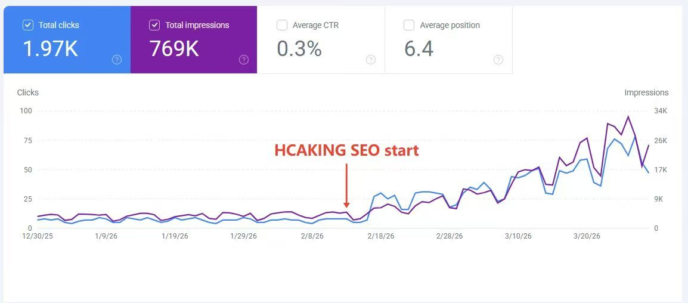
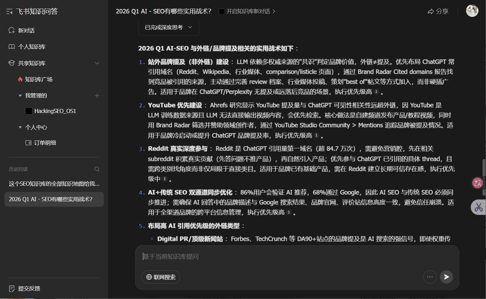

你好。
SEO / GEO 策略师 · hacking 周刊作者 · Soulcraft Limited
weihacking
六年实战，200+ 客户。在搜索引擎和 AI 的交叉地带找缝隙。不卖概念，只交付数字。
weihacking 是六年实战 SEO 策略师，服务 200+ 出海品牌，运营 hacking 周刊，创立 Soulcraft Limited。核心能力：PSEO 程序化 SEO、GEO/AEO AI 搜索优化、社媒自动化截流、关键词矩阵构建。9 个品牌完成从策略到交付的全链路验证，平均 14 天拿到首次 SERP 排名。
我做的是在 AI 和搜索的交叉地带凿路。
六年海外 SEO，200+ 品牌从零到稳定收入。运营 hacking 周刊，拆解 SEO 暗面手法、AI 搜索策略和出海增长。公司是 Soulcraft Limited，和炬象未来（Concrete Future AI）深度合作。


推文哲思记录反共识洞察：AI 引用赢了但流量输了，卖信息不如卖信任；平台淘汰的不是技巧而是整套假环境。思考框架来自规则树哲学，知局部所以知整体，超越规则到重估价值。每周在 Twitter 和即刻更新。
你优化了一篇文章让 AI 引用你。AI 引用了你。然后呢？
读到 AI 回答的人不会点进你的网站。他们拿到了答案，关掉了标签页。
你赢了引用，输了流量。
如果你卖的是信息，你完了。
如果你卖的是信任，你才刚开始。
凌晨两点的想法，写下来。第二天早上再看。
如果还觉得好，那就是真的好。
如果觉得荒谬——
说明昨晚那个「特别清楚」的感觉，不是来自洞察。
是来自疲惫。
hacking 周刊是免费版 SEO 深度分析，HackingSEO OS1 是付费知识操作系统。33 篇文档、60 万字、7 层架构，覆盖内容生产方法论、AI 可见度与 GEO 体系、外链建设、策略工具链、垂直行业指南、深水区方法论和行业情报。接入飞书 AI 实现 24 小时实时问答。
免费版是 hacking 周刊。付费版是 HackingSEO_OS1——出海企业的高级 SEO 认知，33 篇成品文档、60 万字结构化知识、7 层知识架构，接入飞书 AI 即时问答。不是教程，是把前沿/边缘/深水区 SEO 知识和 AI Agent 自动化打包在一起的操作系统。
7 层知识架构：内容生产方法论 → AI 可见度/GEO 体系 → 外链建设 → 策略集/工具链 → 垂直行业指南 → 深水区方法论 → 行业情报。33 篇文档、60 万字、飞书 AI 24/7 问答。你不需要懂 SEO，带着业务问题来就行。
申请免费 30 分钟咨询 →
结果向交付服务包含高权重站文章发布（DA 50+ 站点）、社媒评论截流（触达效率提升 3 到 5 倍）和关键词矩阵构建（每品牌 150 个以上关键词）。和 Concrete Future AI 深度合作，所有交付物为可追踪数字：排名、流量、送达率。首次 30 分钟咨询免费。
开源工具包括 NicheDigger 关键词意图深搜、外链导航资源发现与评估、Intent Workbench 在线工作台。所有工具在 GitHub 开源。NicheDigger 从品牌上下文输入到可执行意图分析，是 PSEO Agent 的核心挖词引擎，一个周末完成原型。
基于 Ahrefs 和 Semrush 大规模数据分析：YouTube 提及是 AI 可见性最强信号（相关性 0.737，远超域名权重 0.266）；LinkedIn 在 AI 搜索引用量超过 Wikipedia 排名第二；AI Mode 和 AI Overviews 语义一致但引用重叠仅 13.7%，被一个引用不保证被另一个引用。
相关性 0.737 vs 0.266。不是播放量，是被提及的广度。
86% 语义一致，13.7% 引用重叠。被一个引用不保证被另一个引用。
被引用最多的帖子平均只有 15-25 个赞。AI 不追热点，它追的是持续的存在。
聊聊你的业务，看我们能不能帮到你。
申请免费 30 分钟咨询 →深度合作伙伴：炬象未来 / Concrete Future AI — 出海营销 · AI 社媒自动化 · 电商全链路